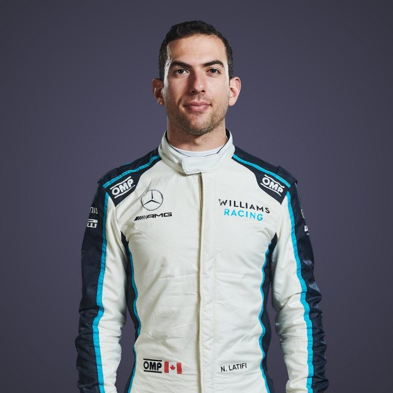

Driver Profile
This is a driver profile of Season 2022 - 2023
NICHOLAS
LATIFI

Biography
Thirteen is an advanced age to begin your karting career these days. But that’s how old Toronto native
Nicholas Latifi was when he took his first steps in motorsport. Just 11 years later, he became a
fully-fledged Formula 1 driver.
That ascension into racing's top category was largely thanks to his most impressive season to date in
Formula 2 in 2019, with Latifi – who’d finished a disappointing ninth in the series’ 2018 standings –
pulling up his bootstraps to claim second in the championship. That result, combined with the
Williams/Robert Kubica union failing to mesh in 2019, meant Williams made the call to promote their
affable Canadian reserve driver to a full-time drive alongside George Russell for 2020.
Latifi’s first taste of F1 machinery actually came all the way back in 2017, when he was given a test by
Renault. Further duties with Force India followed in 2018 before he joined the Williams family in 2019.
It was an annus horribilis for the squad, no doubt – but Latifi’s straightforward, friendly attitude and
insightful feedback helped swing the vote in his favour for 2020.
Now, after two seasons living in Russell’s shadow – and with Williams' form on the rise and a new team
mate in the shape of ex-Red Bull racer Alex Albon – the goal is to show that that his eye-catching F2
year wasn’t just a fluke, and finally prove that he really has got what it takes to mix it with the best
drivers in the world.
TEAM
Williams
COUNTRY
Canada
DATE OF
BIRTH
29 JUN 1995
NUMBER
6
Record
Podiums : N/A
Points : 7
Grands Prix entered : 39
World Championships : N/A
Highest race finish : 7 (x1)
Highest grid position : 10